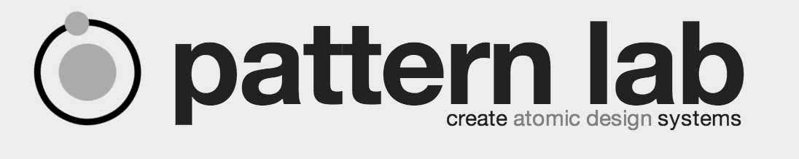
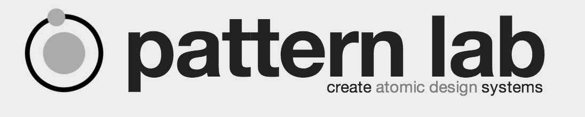

Front-end development
by @andreadsw
Back-end development
by @ioanma
#DAY 1
Front-end Development with Pattern Lab and Twig
by scaragucc and chaz.chumley
Front-end development: video link
 

Tools: Twig, D8 and Pattern lab is better together
- Patterns lab template structure: Pattern, organisms and nodes. Create atomic design
- Pattern lab demo patternlab.io
- It can be done first separated from Drupal. It looks like a style guide.
- Patterns lab mimic the variables in the twig templates.
- Approach suggested is using pattern lab, mapping Drupal field and twig.
- Patterns lab template structure: Pattern, organisms and nodes ...
#DAY 2
Closing the Gaps: Prioritizing Accessibility in Custom Themes with Drupal 8
by @emarchak
Front-end development: video link
- Acessibiliy = A11y in Drupal8
- Use headless components using react.js. See more
- Acessibility levels: Level A, Level AA and Level AAA - How to Meet WCAG 2.0
- Make a sure your website get the AA. The AAA is ideal but not realistic.
- Automated tools: wave and tenon.io
- You can use tools to analise your page manually also do a funcional testing and an user experience testing
#DAY 3
React, relay and GraphQL on drupal8
by fubhy, ohthehugemanatee and moshe weitzman
Front-end development: video link
 GraphQL is a query language for your API
GraphQL is a query language for your API- Using GraphQL module in Drupal you can navigate your schema and queries
- GraphQL can be handled entitity reference easily
- The GraphQL web service can build all schema from fields api and entity api. There is permission available for each field
- React.js works very well with GraphQL and relay
- You can create a standalone component
React Front-end For Your Drupal 8 Back-end
by skippednote and aliyakhan
Front-end development: video link
- Building complex UI
- REACT: Pure function and desconstruct props
- Component has state and bindings
- Lifecycle methods: componentWillMount() ComponentDidMount()
- Event Handlers
- Redux is a predictable state container for javacript apps
- Redux: Immutability, composition and pure functions
- Actions and action creators: pure function with type property
- Reducers take care of state implementation and take a current state and actions. Returns state
- Store: use function createStore(). Providers: Store get current state and work with states
- Progressive decoupling
- How to expose data in Drupal and fetch data from Drupal into react
- Modules in Drupal to expose data: HAL, HTTP Basic Authentication, Restful Web services and Serialization
- Fully decoupled using JSON API